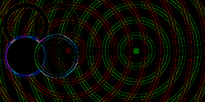

-
SimpleGUICS2Pygame_check
script/SimpleGUICS2Pygame_check.py (April 14, 2020)
===================================================
PATH:
/snap/bin
/home/opi/.local/bin
/home/opi/bin
/usr/local/bin
/usr/bin
/bin
/usr/local/games
/usr/games
/snap/bin
/home/opi/data/git/WORK/outcmp__WORK
/home/opi/data/git/WORK/tsv2htmltable__WORK/src/scripts
/home/opi/data/git/archives/prog/vnu-scripts/vNu-scripts
/home/opi/.local/bin
/home/opi/.local/share/coursier/bin
/home/opi/.config/composer/vendor/bin
/home/opi/bin
/QUICK/progs/infer-linux64-v0.17.0/bin
/QUICK/progs/scala-2.13.3/bin
PYTHONPATH:
/home/opi/data/git/archives/library/simpleguics2pygame
python - version 2.7.16 (default, Oct 10 2019, 22:02:15)
[GCC 8.3.0]
sys.path:
/home/opi/data/git/archives/library/simpleguics2pygame/SimpleGUICS2Pygame/script
/home/opi/data/git/archives/library/simpleguics2pygame
/home/opi/data/git/archives/library/simpleguics2pygame/SimpleGUICS2Pygame/test
/usr/lib/python2.7
/usr/lib/python2.7/plat-x86_64-linux-gnu
/usr/lib/python2.7/lib-tk
/usr/lib/python2.7/lib-old
/usr/lib/python2.7/lib-dynload
/home/opi/.local/lib/python2.7/site-packages
/home/opi/.local/lib/python2.7/site-packages
/usr/local/lib/python2.7/dist-packages
/usr/lib/python2.7/dist-packages
/usr/lib/python2.7/dist-packages/gtk-2.0
import pygame ok - Version 2.0.1
pygame.init() 7 modules loaded ok
import audioread ok - Version 2.1.9
import matplotlib ok - Version 2.2.5
import SimpleGUICS2Pygame ok - Version 2.1.1
import SimpleGUICS2Pygame.codeskulptor ok
import SimpleGUICS2Pygame.codeskulptor_lib ok
import SimpleGUICS2Pygame.numeric ok
import SimpleGUICS2Pygame.simplegui_lib ok
import SimpleGUICS2Pygame.simplegui_lib_draw ok
import SimpleGUICS2Pygame.simplegui_lib_fps ok
import SimpleGUICS2Pygame.simplegui_lib_keys ok
import SimpleGUICS2Pygame.simplegui_lib_loader ok
import SimpleGUICS2Pygame.simpleguics2pygame ok
import SimpleGUICS2Pygame.simpleplot ok
-
test_button_label
-
test_input
-
test_arcImages different: 37!
-
test_circleImages different: 31!

-
test_colors_constantsImages different: 20!
-
test_colors_html
-
test_colors_html_hsla
-
test_colors_html_rgba
-
test_command_line_options
('test_command_line_options.py', 'results_py2/test_command_line_options.png')
('test_command_line_options.py', 'results_py2/test_command_line_options.png')
-
test_dir
List dir() differences between CodeSkulptor (May 2020) and this "Python":
CodeSkulptor simplemap != Python 2.7.16 simplemap
--------------------------------------------------------
Line
Map
Marker
Rice
__name__
create_map
service
-
test_gridImages different: 38!
-
test_image
-
test_line
-
test_numeric
-
test_objects
button<type 'instance'><Control object><Control object>
canvas<type 'instance'><Canvas object><Canvas object>
frame<type 'instance'><Frame object><Frame object>
image<type 'instance'><Image object><Image object>
input<type 'instance'><TextAreaControl object><TextAreaControl object>
label<type 'instance'><Control object><Control object>
sound<type 'instance'><Sound object><Sound object>
timer<type 'instance'><Timer object><Timer object>
-
test_simpleplot_barsImages different: 56!
![[results_good/test_simpleplot_bars.png]](../results_good/test_simpleplot_bars.png "Comparative result.")
![[results_py2/test_simpleplot_bars.png]](../results_py2/test_simpleplot_bars.png "Result of test.")
![[results_py2/test_simpleplot_bars_diff.png]](../results_py2/test_simpleplot_bars_diff.png "Difference images.")
-
test_simpleplot_linesImages different: 56!
![[results_good/test_simpleplot_lines.png]](../results_good/test_simpleplot_lines.png "Comparative result.")
![[results_py2/test_simpleplot_lines.png]](../results_py2/test_simpleplot_lines.png "Result of test.")
![[results_py2/test_simpleplot_lines_diff.png]](../results_py2/test_simpleplot_lines_diff.png "Difference images.")
-
test_simpleplot_scatterImages different: 57!
![[results_good/test_simpleplot_scatter.png]](../results_good/test_simpleplot_scatter.png "Comparative result.")
![[results_py2/test_simpleplot_scatter_diff.png]](../results_py2/test_simpleplot_scatter_diff.png "Difference images.")
-
test_sound
Load from web "bonus.wav"
Load from web "jump.ogg"
Load from web "arrow.mp3"
Load local "chirp_1s.wav"
Load local "missile.ogg"
Load local "missile.mp3"
Play "chirp_1s.wav" 1.000000s loaded from local
Play "missile.ogg" 0.208980s loaded from local
Play "missile.mp3" 0.287347s loaded from local
Play "bonus.wav" 0.448481s loaded from web
Play "jump.ogg" 0.350884s loaded from web
Play "arrow.mp3" 1.436735s loaded from web
End of test_sound
-
test_textImages different: 32!